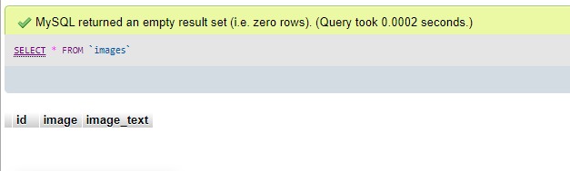

Upload Image - MVF 1 for OES website
Team member in charge of MVF - Jacob Bell
Introduction:
As we have 6 group members we decided to split up this MVF (the augmented reality function) into 2 parts, the upload photo part which is done by me, and the superimpose image part which is done by Joshua of which may be viewed on the ‘MVF 5’ page on the navigation bar.
Overall this feature was fairly simple to implement, the primary struggles occurred when attempting to utilize a database when uploading images and storing said image data on the database itself, but after some research a good final result was achieved. The tools and technologies that i have used for the creation of this feature are wampserver, with the included MySQL functionality. As well as visual studio code in order to create the .php files.
The following sections will detail all the parts that were achieved for the implementation of this specific feature, including screenshots and descriptions to help give a better understanding of how this feature works.
Part 1 - the database:
The first step for the creation of this feature was to make the database using MySQL and PHPmyadmin found alongside the wampserver functionality , after doing some research online and following some guides on how to create said database I found a fairly simple solution. It is important to note that the information, columns and rows found in this database should be transferred over to the full website database in the final product, but as this is an example of individual implementation, i had no need to do that at this point in time.
This first image depicts the database structure itself. There are 3 rows, ‘id’ , ‘image’ and ‘image_text’. The id handles the image identification which will start at ‘1’ and add 1 for every additional image added to the database, this also acts as the primary key in this scenario. The ‘image’ row handles the identification and storage of the image name, and will allow us to upload and display said image on the users screen. And finally the ‘image_text’ handles the text the user inputs when uploading the image onto the website, in this case it will allow the user to name the image.
This area depicts the location for the storage of image data, the 3 aforementioned fields can be seen below and will eventually be filled out with information as users begin uploading images onto the website.
Part 2 - the code:
The next step is actually writing the code that will run this feature on the website itself, as such i will break down the .php file that was written for this feature and explain each section of said code step by step.
This first image depicts the php code dedicated to the database as well as handling all the functions relating to uploading, saving, displaying and anything else to do with the image itself. The first chunk locates and calls the premade database ‘image_upload’ and then connects to said database through the phpmyadmin function.
The terms $POST and $conn are used frequently throughout this code snippet,$POST is in relation to receiving data directly from a database and $conn is in reference to connecting to said database.
The remainder of the code is explained through the notation. If the user selects the upload button and selects an image, the image name is stored in the database alongside the image text and that combination is given an id number. After this step is complete the uploaded image will be stored in a file on the server side of the website. If any step fails then an error message will occur, as can be seen from the bottom of the snippet.
The next image depicts the head of the code. Included in the head are two links to the bootstrap CDN and the .js file that is required to run all the bootstrap features that we have utilized and hope to utilize for this website. In addition to this there are a few small css altercations to the base bootstrap stylesheet that indicate a few important things; the first of which is limiting the size of the image that is displayed when a user uploads an image, this is found at the bottom of the snippet, this is important in general security and will stop a user uploading a file that is immense in size that could hinder the server performance. The final thing that the small style section allows us to do is to alter the base bootstrap in case we need to make a more custom implementation of a button or text area, change the color or size of said feature and so forth.
This section of code is the navigation bar done through bootstrap. As this code only covers MVF 1 the links to the other pages are not present, but should be included in the final product and will be a part of our video presentation for assignment 3.
This section of the code handles the visual buttons and connection to the above .php code that handles all the functionality. The first segment displays all the information stored on the database such as the image and image text, the following segments are the locations in which the user may enter the image text as well as the button they press to upload their image and display it on the webpage.
This code handles the text and links on the footer section of the page.
Part 3 - the front end:
This section will display images of the web page itself and give reference to the above code and how it is functioning to help the webpage work.
Here is the base page a user may see when attempting to upload an image to the OES website. Displayed on this page are all the aforementioned buttons and text areas that can be seen in the code snippets. In a normal scenario this section would be located on the product page of a specific item, but that will be shown in the final video presentation.
The user will select the ‘choose file’ button and will be prompted with a pop-up of their file explorer, they will select an image from their computer and then input a name for the new uploaded image. The user will then hit the ‘upload’ button when they are ready to upload the image and display it on the webpage.
After the user hits the ‘upload’ button their selected image will be displayed on screen as can be seen below and they will then partake in the next step which involves MVF 5.
Part 4 - the back end:
This final section will detail what happens when the user performs the above actions shown in step 3.
After a user selects an image from their computer and hits the upload image button, that data will be sent to the database and displayed on this list, the admin of the server may then alter this information or delete the image from the database for whatever reason.
After the image has been uploaded and stored on the database, a copy of the image file will be added to a specified folder which is located on the server side of the data exchange, basically the image will be stored on the OES websites servers and can be accessed by said servers at any time. In this instance, as we don't have access to a remote server, the file has been stored on my local machine, but the basic principle will remain the same.
Conclusion:
I hope this step by step walkthrough of MVF 1 has given you a better understanding of how I got this functionality to work on its own. For a better understanding of how each MVF will work together please refer to the video presentation that we have completed for assignment 3.